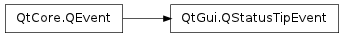

QStatusTipEvent ¶

Detailed Description ¶
The PySide.QtGui.QStatusTipEvent class provides an event that is used to show messages in a status bar.
Status tips can be set on a widget using the QWidget.setStatusTip() function. They are shown in the status bar when the mouse cursor enters the widget. For example:
def __init__ ( self , parent ): QMainWindow . __init__ ( self , parent ) myWidget = QWidget () myWidget . setStatusTip ( tr ( "This is my widget." )) setCentralWidget ( myWidget ) ...
Status tips can also be set on actions using the QAction.setStatusTip() function:
def __init__ ( self , parent ): QMainWindow . __init__ ( self , parent ) fileMenu = menuBar () . addMenu ( tr ( "File" )) Act = QAction ( self . tr ( "&New" ), self ) Act . setStatusTip ( tr ( "Create a new file." )) fileMenu . addAction ( Act ) ...
Finally, status tips are supported for the item view classes through the Qt.StatusTipRole enum value.
- class PySide.QtGui. QStatusTipEvent ( tip ) ¶
-
Parameters: tip – unicode Constructs a status tip event with the text specified by tip .
See also
- PySide.QtGui.QStatusTipEvent. tip ( ) ¶
-
Return type: unicode Returns the message to show in the status bar.
See also